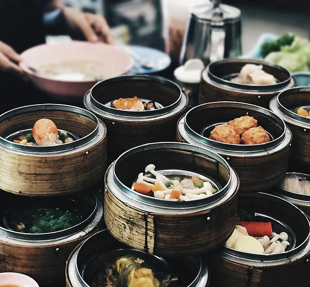
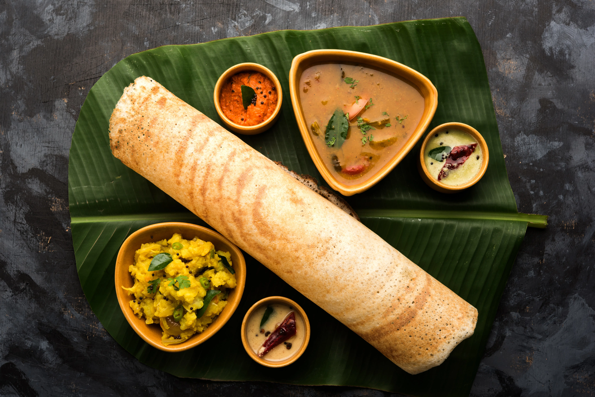
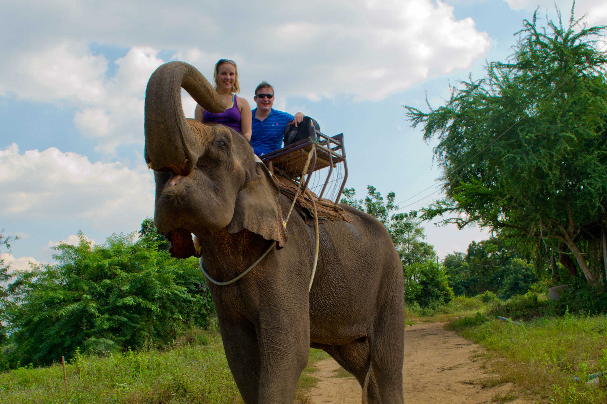

Latest Blogs
Journey Through Time: Unraveling Hidden Gems
Yet, travel isn't just about the destinations; it's about the journey itself. From the excitement of planning an itinerary to the thrill of setting foot in a new land, each step is a testament to the human spirit's quest for adventure. And as we traverse the globe, collecting memories like treasures along the way, we come to realize that the true essence of travel lies not in the places we visit, but in the connections we make and the stories we share.
Written by Pallavi Kapoor
Exploring the Unknown: Adventures Beyond Borders
Exploring the world is an unparalleled adventure, each journey an opportunity to discover new horizons and embrace diverse cultures. From the bustling streets of Tokyo to the serene landscapes of the Swiss Alps, travel opens doors to unforgettable experiences. Whether it's savoring exotic cuisines, marveling at architectural wonders, or simply soaking in the beauty of nature, every destination has its own story waiting to be told.
Written by Jane Smith

Wanderlust Chronicles: Tales from the Road
Embarking on a journey allows us to break free from the monotony of everyday life and immerse ourselves in the extraordinary. Whether traversing sandy shores or navigating bustling city streets, travel invites us to embrace spontaneity and embrace the unknown. It's in these moments of uncertainty that we discover the true essence of adventure, finding beauty in the unexpected and joy in the journey itself.
Written by Adam Johnson
Dosa: The Crispy Delight
South Indian cuisine is renowned for its rich flavors, aromatic spices, and diverse array of dishes. From crispy dosas to fluffy idlis and tangy sambhar, each bite is a burst of vibrant taste and culinary tradition. Coconut, curry leaves, and tamarind are staples in South Indian cooking, adding depth and complexity to every dish. Whether you're indulging in a hearty meal of masala dosa served with coconut chutney and piping hot filter coffee, or savoring the delicate flavors of a steamed idli, South Indian cuisine offers a sensory journey that delights the palate and nourishes the soul.
Written by Manav Raut

River Rafting in Rishikesh
River rafting in Rishikesh is an exhilarating adventure that draws thrill-seekers from all corners of the globe. Nestled in the foothills of the Himalayas, the mighty Ganges River provides the perfect playground for this adrenaline-pumping activity. As you navigate through the rapids, each twist and turn brings a surge of excitement and a sense of accomplishment. The stunning natural beauty surrounding the river adds to the experience, towering cliffs, and cascading waterfalls creating a breathtaking backdrop.
Written by Emma Fenny
The Enigmatic Elephants of Kerala
In the verdant landscapes of Kerala, where emerald greenery meets azure backwaters, roams a beloved icon deeply ingrained in the cultural fabric of the region – the Kerala elephant. Revered as symbols of power, wisdom, and grace, these majestic creatures hold a special place in the hearts of the people, embodying the essence of Kerala's rich heritage and biodiversity.Adorned with vibrant silks and ornate decorations, Kerala elephants are a common sight during religious festivals, processions, and cultural celebrations across the state. These gentle giants, with their majestic tusks and dignified demeanor, evoke a sense of awe and admiration, captivating onlookers with their regal presence.
Written by Joey Centineo


Exploring the Mystique of the Golden Temple
The Golden Temple, or Sri Harmandir Sahib, nestled in the heart of Amritsar, India, is a marvel that transcends mere architecture; it embodies the soul of Sikhism and serves as a beacon of spirituality for people worldwide. With its resplendent façade, adorned with intricately crafted gold leaf panels, it captures the eye and ignites the imagination. Yet, it is not just its opulence that draws millions of pilgrims and visitors every year; it is the profound ethos of inclusivity and service that permeates its very essence. The Golden Temple stands as a testament to the core values of Sikhism – equality, compassion, and selfless service. Here, people from all walks of life, regardless of caste, creed, or nationality, come together to partake in the timeless rituals of prayer, reflection, and community service.
Written by Harjeet Singh
Interested in sharing your travel experiences with our community? We welcome submissions from fellow adventurers! Simply email your blog to templ456@gmail.com and let your voice be heard!
© 2024 INTELLIGENT TOURIST. All rights reserved.